Timeline
The Legend of Zelda series contains many games and has numerous spin-off titles and licensed tie-ins. This page will serve as a timeline of all official main-line titles including some background information.
The History of Zelda
| Title: | Description | Original Release Date: | Platforms: | Screenshot: |
|---|---|---|---|---|
The Legend of Zelda |
Collect the 8 fragments of the Triforce of Wisdom to defeat Ganon and rescue Princess Zelda | 1986 | Nintendo Entertainment System, Gameboy Advance, Gamecube, Wii 3ds, Wii U, Nintendo Switch |
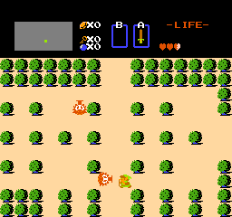 |
Zelda II: |
Gather the Crystals in Palaces across Hyrule to prevent Ganon's ressurection and heal the cursed Princess Zelda | 1987 | Nintendo Entertainment System, Gameboy Advance, Gamecube, Wii 3ds, Wii U, Nintendo Switch |
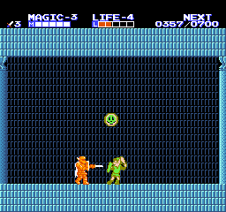 |
The Legend of Zelda: |
Rescue the seven Wise men's daughters and to stop Ganon fromtaking over the realm of light | 1991 | Super Nintendo Entertainment System, Gameboy Advance, Gamecube, Wii 3ds, Wii U, Nintendo Switch |
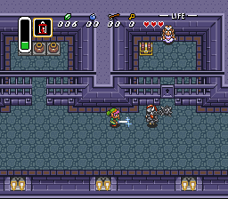 |
The Legend of Zelda: Link's Awakening |
Explore a strange island within a water spirit's dream. Defeat the nightmare to return home | 1993 | Gameboy Gameboy Color 3ds Nintendo Switch (Remake) |
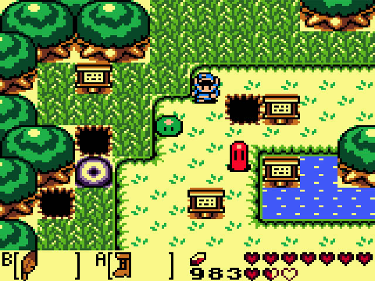 |
The Legend of Zelda: Ocarina of Time |
Face Ganondorf, the King of Evil, and foil his plan to destroy Hyrule | 1998 | Nintendo 64, Gamecube, 3ds (Remake) |
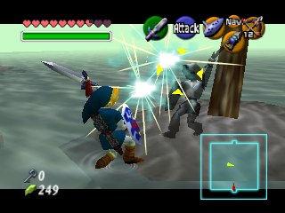 |
The Legend of Zelda: Majora's Mask |
Prevent a demon from crashing the moon into the small realm of Termina | 2000 | Nintendo 64, Gamecube, 3ds (Remake) |
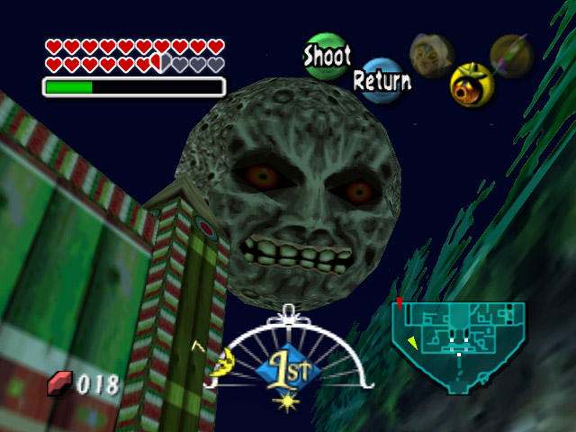 |
The Legend of Zelda: Oracle of Seasons and Oracle of Ages |
Save the Oracles of Seasons and Time from the clutches of Ganon's forces | 2001 | Gameboy Color 3ds Nintendo Switch (Remake) |
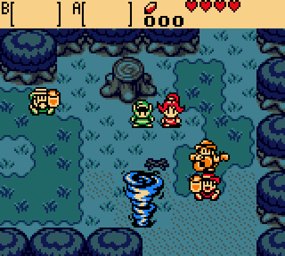 |
The Legend of Zelda: Four Swords |
Join your friends in a 4-player journey to stop the Wind Mage Vaati | 2002 | Gameboy Advance, 3ds |
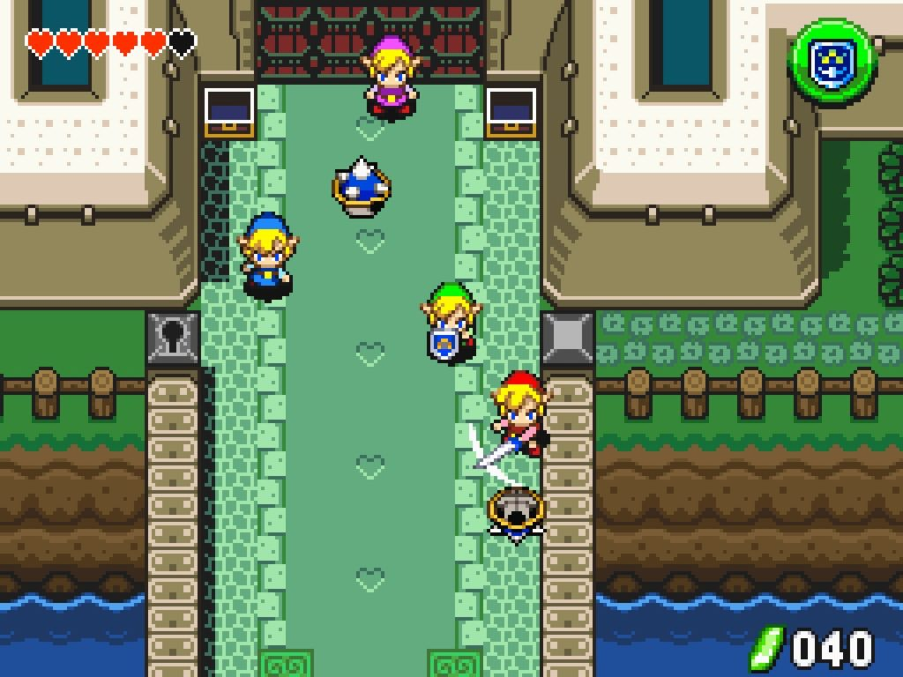 |
The Legend of Zelda: The Wind Waker |
Sail across the great sea to save your kidnapped sister and defeat Ganondorf | 2002 | Gamecube, Wii U |
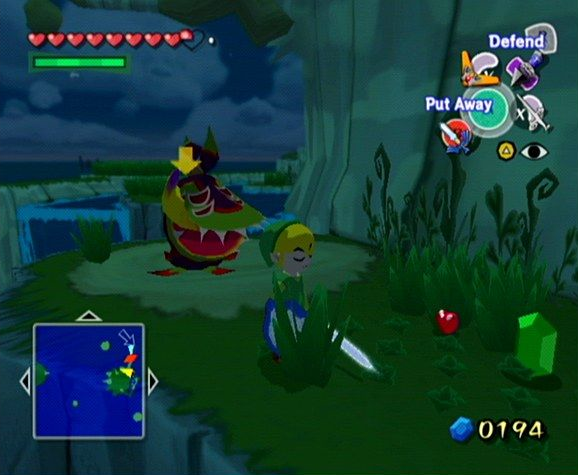 |
The Legend of Zelda: Four Swords Adventures |
Join three friends as you journey across Hyrule to stop the Wind Mage, Vaati, from resurrecting Ganon | 2004 | Gamecube | 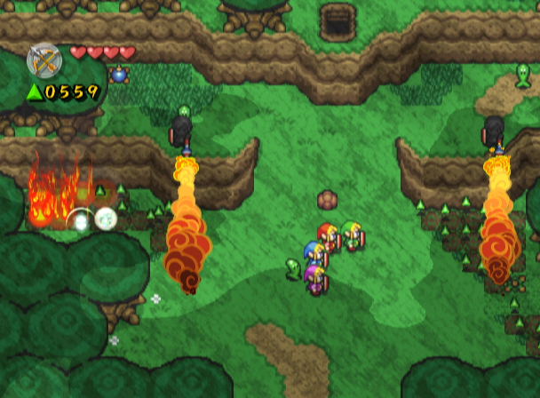 |
The Legend of Zelda: The Minish Cap |
Join Ezlo as you explore Hyrule with the ability to shrink to the size of an ant | 2004 | Gameboy Advance, Wii U |
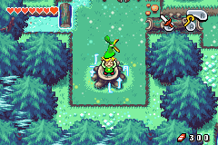 |
The Legend of Zelda: Twilight Princess |
Protect the world from falling to Twilight by defeating the Emperor of Twilight, Zant | 2006 | Gamecube, Wii, Wii U |
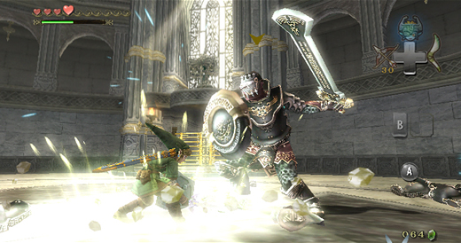 |
The Legend of Zelda: Phantom Hourglass |
Defeat the Ocean King on your quest to rescue Zelda in a far off land | 2007 | Nintendo DS | 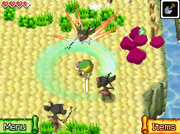 |
The Legend of Zelda: Spirit Tracks |
Become a train engineer to stop Chancellor Cole's plot to take over the world | 2009 | Nintendo DS | 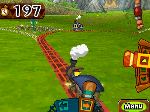 |
The Legend of Zelda: Skyward Sword |
Prevent the Demon King Demise from resurrecting as you explore the world below the clouds | 2011 | Wii | 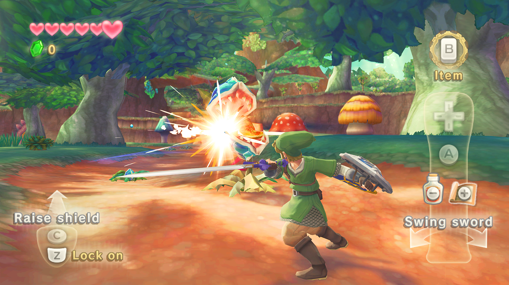 |
The Legend of Zelda: |
Journey between Hyrule and Lorule to stop the Mad Artist, Yuga's evil plan | 2013 | 3ds | 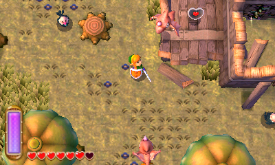 |
The Legend of Zelda: Tri Force Heroes |
Join 2 friends while dressing up in a multitude of outfits to stop the evil Witch | 2015 | 3ds | 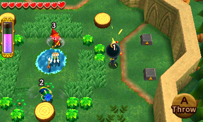 |
The Legend of Zelda: Breath of the Wild |
Travel across the destroyed land of Hyrule as you try to recall your lost memories | 2017 | Wii U, Switch |
 |